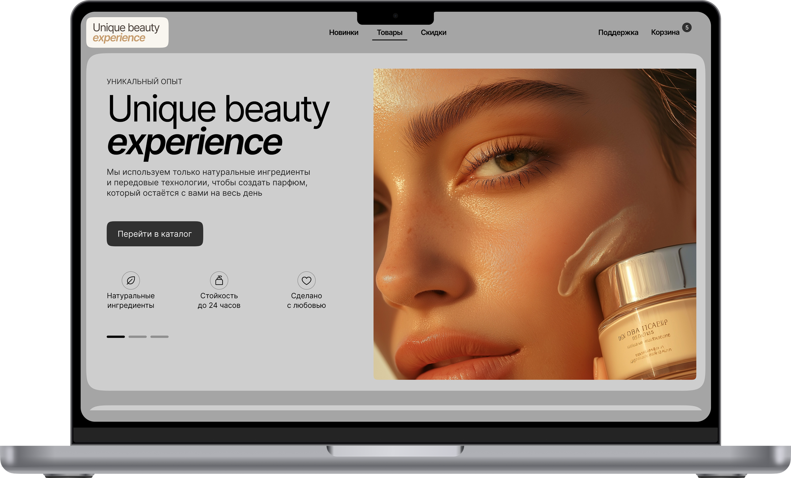
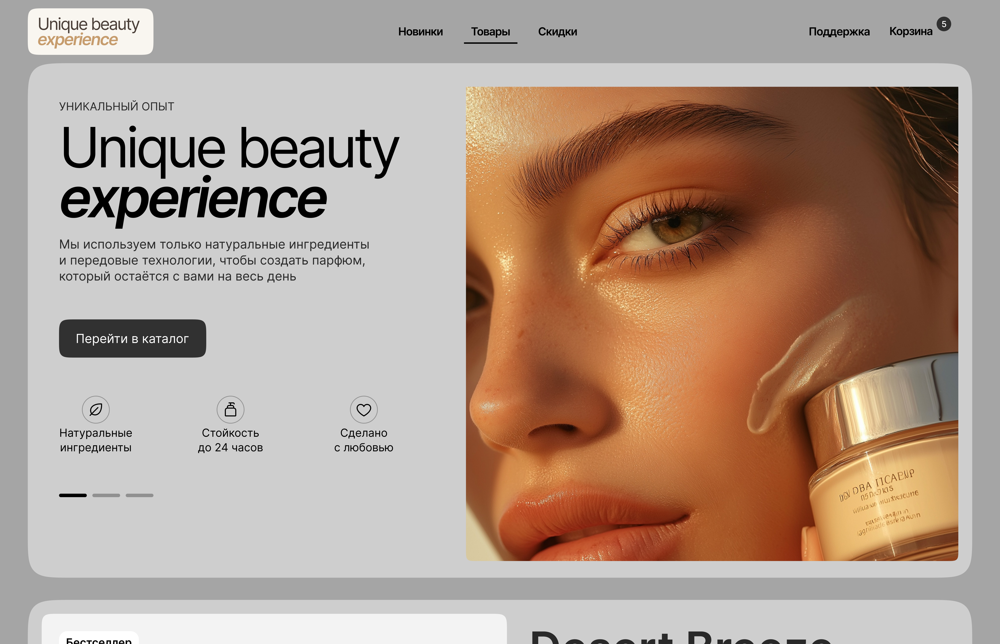
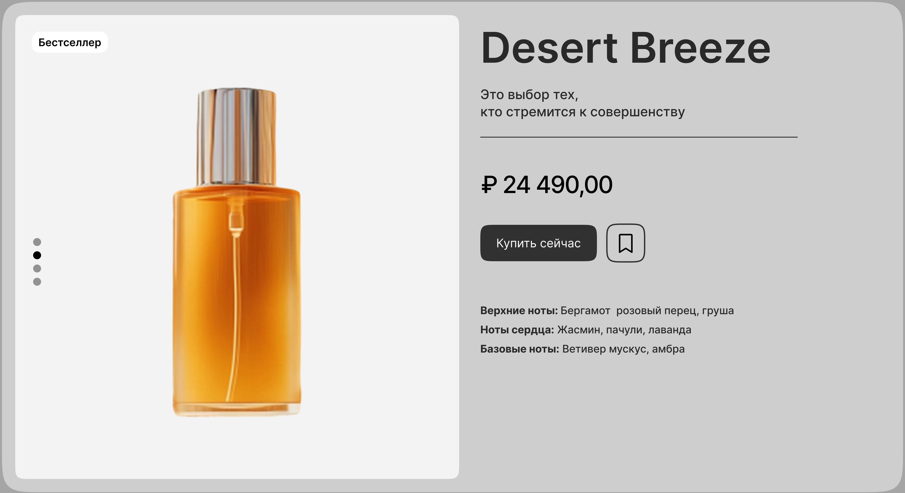
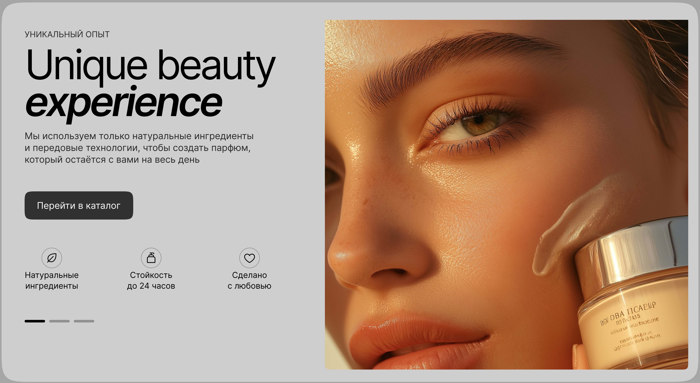
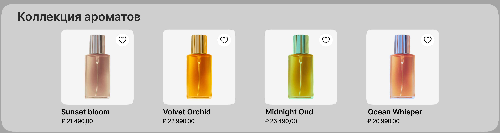
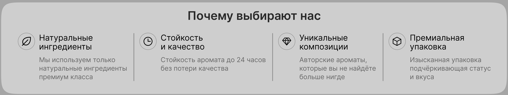
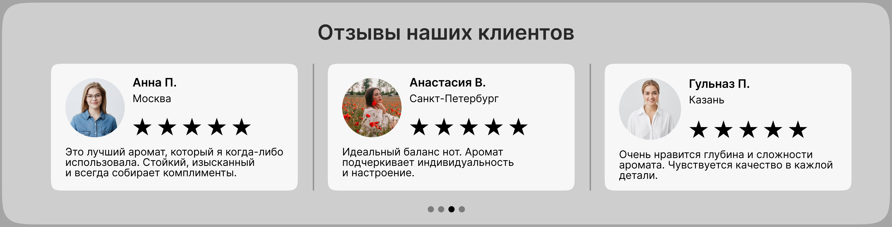
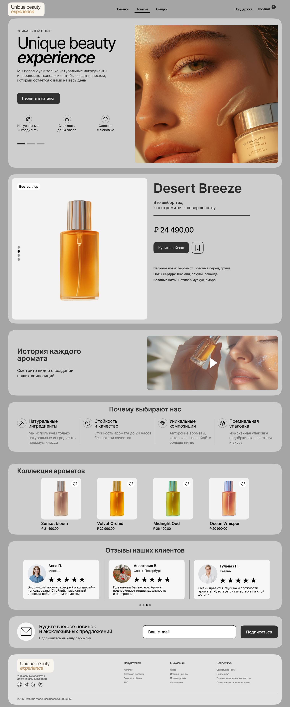

Первое знакомство
Нужна точка входа в ассортимент. Первый экран ведёт к каталогу, а Desert Breeze показывает, как устроена карточка конкретного аромата.
04 / ВЕБ-ДИЗАЙН · ПАРФЮМЕРИЯ
Perfume-Mode
Концепция парфюмерного бутика для тех, кто выбирает аромат онлайн. Первый экран знакомит с брендом, а карточка аромата помогает разобраться в нотах, оценить цену и решить, стоит ли покупать.
Посмотреть макет

01 / Задача и роль
Аромат нельзя оценить через экран. Фотография и история передают настроение, но решение зависит от понятных сведений о композиции, цене и доступных вариантах. Задача бутика — дать эти сведения на одной странице.
Нужна точка входа в ассортимент. Первый экран ведёт к каталогу, а Desert Breeze показывает, как устроена карточка конкретного аромата.
Нужно сопоставить названия и цены и сохранить интересный вариант. У коллекции повторяется структура карточек, поэтому её можно просмотреть быстро.
Проработал структуру страницы, иерархию сведений о товаре, карточки и визуальное направление. Собрал их в единый десктопный макет.
02 / Путь покупателя
Этот сценарий показывает, какие вопросы покупателя должна закрыть витрина. Коллекцию можно открыть с первого экрана, а историю бренда и отзывы изучить в любой момент по ходу страницы.
Первый экран задаёт настроение и предлагает перейти к ассортименту.
У Desert Breeze можно сверить ноты, цену и внешний вид флакона.
В коллекции можно просмотреть альтернативы и отметить интересные ароматы.
История, преимущества и отзывы дают дополнительный контекст. Кнопка покупки остаётся рядом с ценой аромата.
03 / Карточка аромата
Крупное фото показывает сам продукт. Рядом расположены название, цена и основное действие, а ноты помогают представить, как раскрывается композиция.

04 / Дизайн витрины
Фотографии передают настроение. Повторяемые карточки упрощают сравнение, а история, преимущества и отзывы дают контекст тем, кто хочет узнать больше перед покупкой.
Тёплый портрет задаёт тон, а контрастная кнопка ведёт в каталог. На следующей итерации стоит проверить, насколько быстро посетитель считывает именно парфюмерию: крупный кадр напоминает рекламу ухода за кожей.

Четыре аромата показаны в одном масштабе. Названия и цены стоят в одинаковых местах, а сердце обозначает сохранение варианта.

История выделена в отдельный редакционный блок с превью видео. Она даёт место для рассказа о создании аромата и оставляет карточку товара компактной.
Преимущества собраны в короткие карточки. Перед публикацией заявления о составе и стойкости должны подтверждаться данными о продукте.

В макете показан формат отзыва с оценкой, именем и коротким комментарием. Для магазина этот блок заполнялся бы отзывами покупателей после покупки.

05 / Визуальная система
В витрине нейтральные поверхности разделяют смысловые блоки. Графит выделяет цену и действия, а тёплый свет в фотографии переносит акцент на продукт.
#F8F4EE#E8D8C7#2D2522#A66E47Desert Breeze.
Крупные заголовки задают ритм. Цены, названия и действия остаются компактными и читаемыми.

06 / План проверки
Для проверки предлагается кликабельный прототип. Сначала стоит дать задания пяти участникам, которые выбирают парфюмерию онлайн. Ниже приведены целевые критерии для первого раунда.
| Задание | Целевой критерий |
|---|---|
| Распознать категорию по первому экрану | 4 из 5 участников называют парфюмерию после пяти секунд просмотра. |
| Найти цену Desert Breeze и назвать одну ноту | 4 из 5 участников находят оба ответа за 20 секунд после открытия карточки. |
| Сравнить два аромата и найти действие для покупки | 4 из 5 участников справляются за 60 секунд без подсказки. |
07 / Результат
Результат проекта — десктопный макет с первым экраном, карточкой Desert Breeze, коллекцией и блоками доверия. На нём видно, как покупатель переходит от впечатления к конкретным сведениям об аромате.
После проверки витрины можно спроектировать мобильную версию, состояния корзины и оформление заказа. Это позволит проверить путь от выбора аромата до подтверждения покупки.
Посмотреть макет